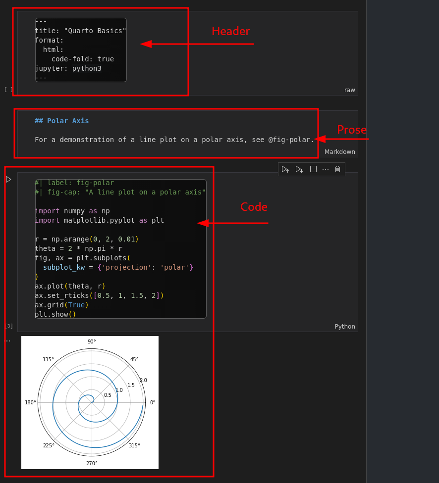
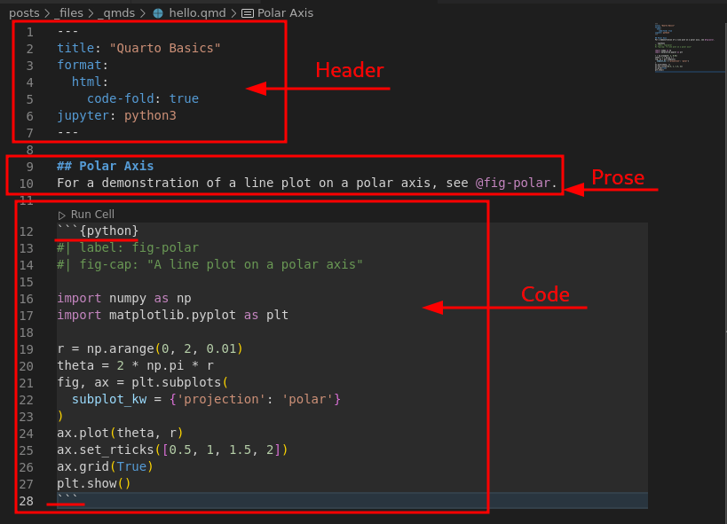
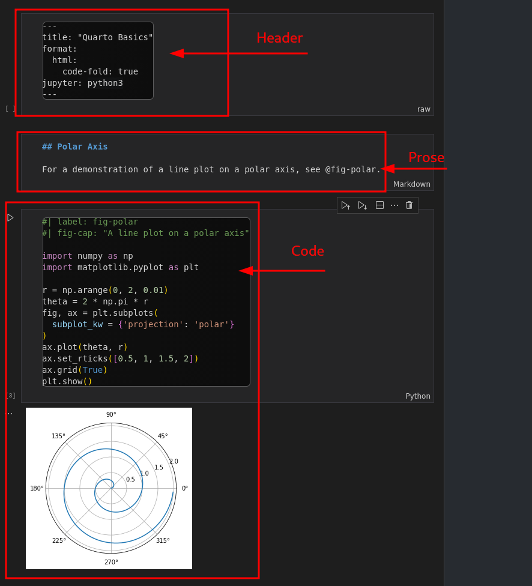
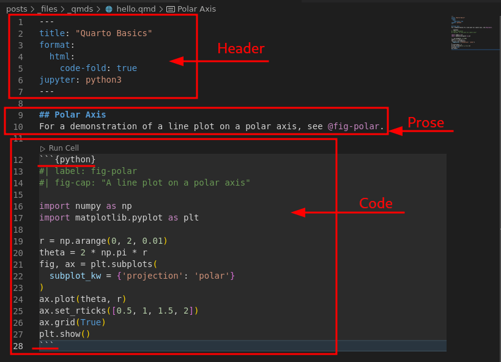

flowchart LR
A[Get Hungry] --> B(Proceed to Kitchen)
B --> C{Decision}
C --> D[Taco Day!]
C --> E[Steak Day!]
If you’ve ever worked with the R programming language then you may have come across RMarkdown. And, if you have come across it but ended up mostly moving to Python - like I have had to - then you likely miss Knitr and this tooling. If you don’t know what I’m talking about then toda y is going to be a good day for you. We’re going to learn how to take what could of been a Jupyter Notebook and convert it to format which is similar in practice but also has excellent support for converting out of Notebooks.
According to the site: Quarto® is an open-source scientific and technical publishing system built on Pandoc.
In simpler language, Quarto is a tool to convert prose and runnable code into more accessible technical documentation: such as PDF files. As someone who is currently working on building an automated report of their Finances, this is so much better than trying to convert a Jupyter Notebook into a PDF. The real problem with that pipeline is that the conversion between the JSON formatting of the Notebook to the PDF is terrible. If you have never done that, I would recommend openning up one of your own notebooks and exporting it to a PDF just so you can see for yourself. And, the problem is that you can no real control over the formatting of the text. This is where Quarto comes in - and we’re going to use some examples on the website to show just how much better this really is.
We’ll take the example from the site as a base to build off of. Like an RMarkdown or Markdown file, the Quarto Markdown file is a kind of structured formatting shorthand to generate a document. These documents are broken into a Header, Prose and Code Chunks:   
 
So, if we convert the Quarto and the Notebook examples to PDFs - Quarto PDF and the Notebook PDF - then you can quickly see that the Quarto version is much better formatted. And, if you look at the example code, you can see that the code and the prose are more mixed together. This could be an advantage or a disadvantage depending on how you like to work; the output improvements are just superior.
A note that I ended up with some issues while trying to export the Notebook PDF which you might also run into. nbconvert wants you to install with running this:
sudo apt-get install texlive-xetex texlive-fonts-recommended texlive-plain-generic… but I found that wasn’t enough and it still could not find pandoc. Since I’m working with the debian system, a simple sudo apt install pandoc was sufficient to solve this and export the PDF file finally.
Like I said previously, if you’ve ever wanted to write up actual reports from notebooks then this is wonderful. Something like this could allow you to write an analysis, set it to run automatically and simply email them out to people. No longer would you necessarily need to rely on a Dashboard. And, one disadvantage of a dashboard is that it is not a traditional static file. This is actually an advantage if you wanted to keep those records of tracked changes - such as finances - where you may even require them.
Another surprisingly simple and useful builtin for this is graphing. You can simply include flowcharts right into your documents and it just works! Here a flowchart from the site:
flowchart LR
A[Get Hungry] --> B(Proceed to Kitchen)
B --> C{Decision}
C --> D[Taco Day!]
C --> E[Steak Day!]
I had a fun post idea a while ago to build a graph out of the ghosts in Phasmophobia and now I can do it in a few minutes:
I cannot wait to start using this at work and in my personal projects. There is so much potential for this tool.